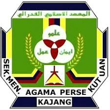

Academic Background
These are the schools I have attended, from the most recent.
- International Islamic University Malaysia (2024 – now)
-
 CFS IIUM(2023 – 2024)
CFS IIUM(2023 – 2024)
-

Sekolah Menengah Agama Persekutuan Kajang (SMAPK)(2018 – 2023)
Subjects I enjoy
- Programming
- Mathematics
- Database